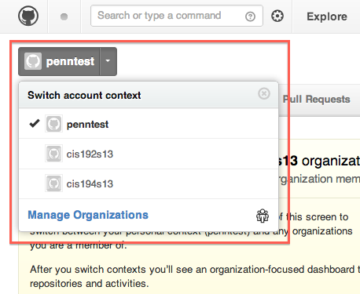
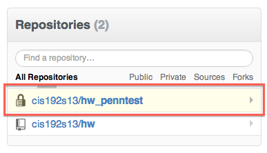
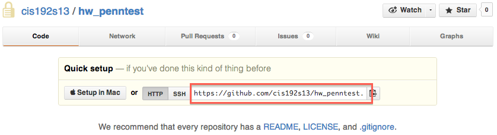
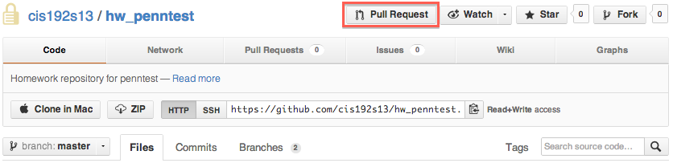
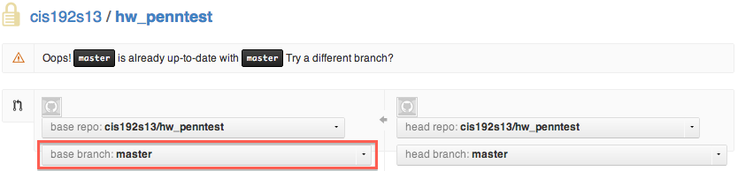
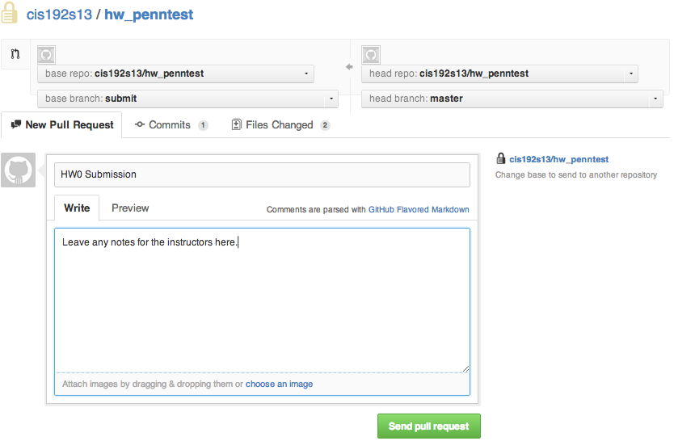
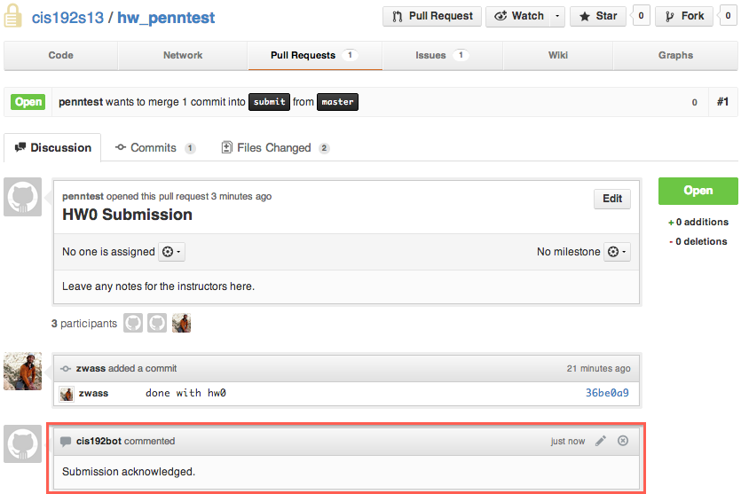

CIS 194 Homework Submission
Prerequisites
- Mac or Linux machine. This is possible on Windows, but some commands will be different.
- An account on Github. If you have an existing one, feel free to use that. Otherwise, sign up at github.com.
- Git installed. You can install via binary, or your favored package manager.
Initial Setup
This is a new system. If you encounter errors on our site, please copy and paste the full web page into a private Piazza question. If you have trouble with git/Github, please ask a public Piazza question.
- Create an account in our submission system. Your username should be your PennKey.
- Now log on to Github. Change your view to the CIS194 class
context.

The context menu
- Click on the repository we've created with your name. The name will be in
the form 'hw_pennkey'. Note this repository is private, and only you
and the instructors should have access.

Repository list
- Copy the repository URL from the repo page. Note: If you know how to use
Github with SSH, feel free to do so. We use HTTPS here because that is now
Github's default.

Getting the repository URL
- Open your terminal. We are going to clone a copy of the repo so that
we can do our work and push it back to Github. First
cdto the directory you want your homework folder in (if you don't know what that means, please take a few minutes to read section 3 of this document). Now type (When prompted for your username and password here, use your Github username and password):git clone repo_url_you_copied
put together, that all looks like this:
bash-3.2$ mkdir penntest bash-3.2$ cd penntest /Users/zwass/penntest bash-3.2$ git clone https://github.com/cis194s13/hw_penntest Cloning into 'hw_penntest'... Username for 'https://github.com': penntest Password for 'https://penntest@github.com': warning: You appear to have cloned an empty repository. bash-3.2$
We've now copied the (empty) repository onto our computer, so we can
cdinto that directory:bash-3.2$ ls hw_penntest bash-3.2$ cd hw_penntest/ /Users/zwass/penntest/hw_penntest bash-3.2$
- Now we're going to add the class homework repository as an "upstream" to
our personal homework repository. This will allow us to pull required
homework files directly from Github. You'll need to execute the following
command inside the repository (directory) you just cloned:
git remote add upstream https://github.com/cis194s13/hw.git
This added the class repository as a git "remote", which means that you can pull changes down from that repository and into your personal repository. Let's do that now. Run the command:
git pull upstream master
and you should see that files were copied from the server.
- Almost done. We need to create a branch that we will make our submissions
against. First, create a new branch:
git branch submit
Now push that branch to Github:
git push origin submit
Let's also push the master branch to Github:
git push origin master
Whew! We've got the setup out of the way, now you can get to work.
Working on Homework
- First get any files/folders that were added to the class repository:
git pull upstream master
- Now do your work.
- Here's how we get our work onto Github. Pretend we did our homework in the
directory
hw0(inside our repository directory), in the filesfile1andfile2. First we need togit addall the files:git add hw0/file1 hw0/file2
Now we make a commit:
git commit -m "done with hw0"
Now we can push our changes to Github:
git push origin master
- Since we've pushed our work to Github, now we just need to let the
submission system know that we're done. First we create a Pull Request on
Github. Go to your repository on Github and click the Pull Request button.

Pull request button
- Set up the pull request with the base branch as 'submit'

Changing the base branch

Completed pull request
And send the pull request.
- Now go to the 'Submit Homework' tab on the submission website. Select the
assignment you'd like to submit, and paste the URL of the pull request you
just created. After clicking the 'Submit Assignment' button, verify that
the class bot acknowledged your submission. Note: Don't click the 'Merge
Pull Request' button on Github.

Acknowledged pull request
Though we only require that you submit your homework with git, it would be wise to use git to keep track of your changes before you submit. To learn more about git, check out Code School's Try Git for a fun 15 minute intro.
Notes
- If you don't want to type your password every time you try to push or pull from Github, see the documentation on password caching.
- Feel free to work on a branch other than
master(if you know what this means), but please make pull requests against thesubmitbranch. - If you're curious about how this system works, check out the Github repo.